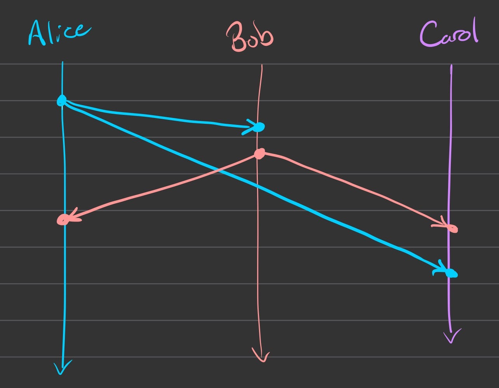
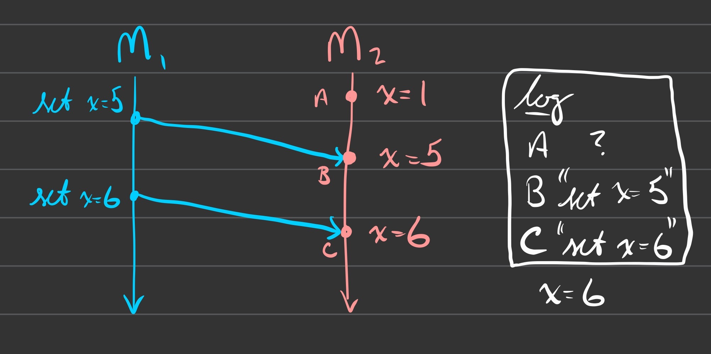

CS490 - Distributed Systems
These are my personal Spring 2022 book/lecture notes for CS490 - Distributed Systems.
To build this site, I use mdBook with a custom preprocessor to extend functionality.
Issues
- preprocessor breaks several common markdown features, in particular tables and checklists
Book
Characterization of Distributed Systems
Introduction
A system in which hardware or software components located at networked computers communicate and coordinate their actions only by passing messages.
This definition has several consequences:
- concurrency
- no global clock
- independent failures
The prime motivation for constructing and using distributed systems stems from a desire to share resources.
- a resource can range from hardware components to software resources
Examples of Distributed Systems
Web Search
Google has put significant effort into distributed system design through things like:
- distributed physical infrastructure
- distributed file systems
- distributed storage systems
- distributed lock service
- programming model that supports parallel/distributed computations
MMORPGs
Online games rely on distributed systems for reasons such as:
- players require fast response times
- events must propagate in real time to many players
Financial Trading
The financial industry has long been at the cutting edge of distributed systems technology. Emphasis is on the communication and processing of events with a focus on reliability and efficiency across a large number of clients. These systems are known as distributed event systems and are covered more in Chapter 6.
Trends in Distributed Systems
The Internet
Enough said, right?
Mobile & Ubiquitous Computing
Increasingly, companies use techniques such as location-aware or context-aware computing to provide users with highly targeted content. This level of mobility also introduces new challenges for distributed systems, such as:
- variable connectivity
- outright disconnection
- maintain operation in the face of mobility
The harnessing of many small, cheap computational devices that are present in users’ physical environments, including home, office, and natural settings.
The suggestion with ubiquitous computing is that, eventually, computing devices will be so pervasive that they’re scarcely noticed. Their computational behavior will be transparently and intimately tied with their physical function. Although there is some overlap, ubiquitous and mobile computing are separate.
A primary goal of ubiquitous computing is spontaneous interoperation, whereby associations between devices are routinely created and destroyed. The challenge is to make this interoperation fast and convenient, even though the user may be visiting the area for the first time. The process of enabling a visitor’s device to communicate on the host network and associate with local services is called service discovery.
Distributed Multimedia Systems
The crucial characteristic of continuous media types is that they include a temporal dimension. For example, there may be restrictions on minimum acceptable FPS throughput or real-time latency.
Distributed multimedia systems are largely concerned with:
- providing support for an extensible range of formats
- providing a range of mechanisms to ensure a desired quality
- providing resource management strategies
- providing adaptation strategies to deal with loss of quality/service
Distributed Computing as a Utility
Many companies have an interest in promoting distributed resources as a commodity or utility in the style of water or electricity. This opens the door for a rent-based service model rather than an ownership-based model.
- SaaS, IaaS, *aaS
A set of internet-based application, storage, and computing services sufficient to support most users’ needs, thus enabling them to largely or totally dispense with local data storage and application software.
Clouds are generally implemented on cluster computers, sets of interconnected computers that cooperate closely to provide a single, integrated high-performance computing capability.
Focus on Resource Sharing
Patterns of resource sharing vary widely in their scope and how closely users are tied together.
- search engine users never need to know about one another
- cooperative workers in a particular organization may share every document together
A distinct part of a computer system that manages a collection of related resources and presents their functionality to users and applications.
Resources in a distributed system are managed by a program that offers a communication interface enabling the resource to be accessed and updated reliably and constantly.
A running program (a process) on a networked computer that accepts requests from programs running on other computers to perform a service and responds appropriately.
The requesting processes are referred to as clients, and the overall approach is known as client-server computing.
Challenges
Heterogeneity
As distributed systems scale, the ability of different systems to talk to each other becomes a serious concern.
- the internet allows users to access services and applications from an extremely diverse set of devices and networks
- data types may be represented differently on different sorts of hardware
- different systems may provide different APIs to the same protocols
- different programming languages use different representations for various data structures
- differences must be addressed via marshalling if applications using these languages are to communicate with each other
A software layer that provides a programming abstraction as well as masking the heterogeneity of the underlying networks, hardware, operating systems, and programming languages.
Most middleware is implemented over the Internet protocols, which themselves mask the differences of the underlying network. All middleware deals with the differences in operating systems and hardware. More on this in Chapter 4.
Mobile code refers to program code that can be transferred between computers and run at the destination, such as Java Applets (or anything via log4j). The virtual machine approach provides a way of making code executable on a variety of host computers: generate code for a particular virtual machine instead of generating it for every possible consumer.
Openness
Openness refers to the characteristic that determines whether a system can be extended and reimplemented in various ways. For distributed systems, how well can a new resource-sharing service be added and made available for use by clients? This requires that key interfaces be published, but this is only the starting point.
Systems designed to support resource sharing in this way are termed open distributed systems to emphasize the fact that they are extensible.
Security
Security for information resources has 3 components:
- confidentiality
- integrity
- availability
Scalability
A system is scalable if it will remain effective when there is a significant increase in the number of resources and/or users.
Challenges relating to scalability include:
- controlling the cost of physical resources
- a system with \(n\) users should require at most \(O(n)\) additional resources
- controlling the performance loss
- algorithms that use hierarchic structures scale better than those that use linear structures
- performance should be no worse that \(O(\log{n})\)
- preventing software resources running out
- consider IPv4
- avoiding performance bottlenecks
- in general, algorithms should be decentralized
Failure Handling
Failures in distributed systems are partial, meaning some components can fail while others continue to function. Particular techniques for dealing with failure might be:
- detecting failure
- not all failures can be detected, but some can!
- masking failure
- messages can be retransmitted, data can be written to multiple disks, etc
- tolerating failure
- recovery from failure
- software designed to respond to failure with recovery actions
- redundancy
- no single point of failure - one goes down, the rest cover
The availability of a system is a measure of the proportion of time that it is available for use.
Concurrency
Several clients might attempt to access a resource at the same time, so shared resources must be treated with care. Further reading in Chapter 7 and Chapter 17.
Transparency
Transparency is the concealment of the separation of components in a distributed system from both the user and application programmer. This has the goal of portraying the system as a whole rather than a collection of independent components.
- access transparency enables local and remote resources to be accessed using identical operations
- location transparency enables resources to be accessed without knowledge of their physical or network location
- concurrency transparency enables several processes to operate concurrently using shared resources without interference between them
- replication transparency enables multiple instances of resources to be used to increase reliability and performance without knowledge of the replicas by users or programmers
- failure transparency enables concealment of faults, allowing users and programs to complete their tasks despite component failure
- mobility transparency allows the movement of resources and clients within a system without affecting the operation of users or programs
- performance transparency allows the system to be reconfigured to improve performance as loads vary
- scaling transparency allows the system and applications to expand in scale without change to the system structure or the application algorithms
Access transparency and location transparency are the most important and are sometimes referred to together as network transparency.
Quality of Service
The main nonfunctional properties of systems that affect the quality of the service experienced by clients and users are:
- reliability
- security
- performance
- adaptability (sometimes)
Case Study: The World Wide Web
This was basically just a summary of HTML, URLs, and HTTP. Not missing a ton.
Summary
Basically just a recap of 1.5 - Challenges.
System Models
Introduction
- Physical models consider the types of computers and devices that constitute a system and their interconnectivity without details of specific technologies.
- Architectural models describe a system in terms of the computational and communication tasks performed by its computational elements.
- Fundamental models take an abstract perspective in order to describe solutions to individual issues faced by most distributed systems.
Because different computers share no global time, all communication between processes is achieved by message-passing.
- The interaction model deals with performance and the difficulty of setting time limits in a distributed system.
- The failure model attempts to give a precise specification of faults that can be exhibited by processes and channels.
- The security model discusses the possible threats to processes and communication channels.
Physical Models
A physical model is a representation of the underlying hardware elements of a distributed system that abstracts away from specific details of the computer and networking technologies involved.
Baseline model: an extensible set of computer nodes interconnected by a network for the required passing of messages.
Three generations of distributed systems:
- Early distributed systems:
- 10-100 nodes on a LAN
- openness not a primary concern
- Internet-scale distributed systems
- began to emerge in the 90s
- physical model is an extensible set of nodes interconnected by a network of networks
- led to increasing emphasis on open standards/middleware
- Contemporary distributed systems
- today’s physical models include mobile nodes such as laptops and smartphones
- ubiquitous computing has led to architectures where computers are embedded in the surrounding environment
- cloud computing has led to a move from autonomous nodes to a pool of provider nodes for a given service
This evolution has resulted in a significant increase in heterogeneity of devices and variation in networking technologies.
Architectural Models
The architecture of a system refers to its separate components and the relationships between them.
Major concerns: make the system
- reliable
- manageable
- adaptable
- cost-effective
Understanding the trade-offs inherent to choices similar to those identified in this section is arguably the key skill in distributed systems design.
Architectural Elements
Key questions:
- What are the entities that are communicating in the distributed system?
- How do they communicate? More specifically, what communication paradigm is used?
- What roles and responsibilities do they have in the overall
architecture?
- Will they change?
- How are they mapped onto the physical distributed infrastructure?
- In other words, what is their placement?
Communicating Entities
The first two questions above are essential to an understanding of distributed systems. From a system perspective, the entities that communicate in a distributed systems are typically processes. This leads to the view of a distributed system as processes coupled with interprocess communication paradigms.
From a systems level, this is fine! From a programming perspective, other abstractions have been proposed.
- objects
- objects represent natural units of decomposition for some given problem domain
- accessed via interfaces
- interface definition language (IDL) provides a specification of methods on an object
- a number of problems!
- components
- components specify not only interfaces, but also the assumptions
they make in terms of other components.
- all dependencies are explicit
- contract is more complete
- this approach promotes higher compositionality
- components specify not only interfaces, but also the assumptions
they make in terms of other components.
- web services
- closely related to objects and components
- approach based on encapsulation and access through interfaces
- represent and discover services through web standards
- expanded on in chapter 9
- closely related to objects and components
Communication Paradigms
Three types:
- Interprocess communication refers to the low-level support for
communication between processes in distributed systems, including
- message-passing primitives
- direct access to the API offered by Internet protocols (socket programming)
- support for multicast communication
- expanded on in chapter 4
- Remote invocation covers a range of techniques based on a two-way
exchange between entities in a distributed system
- Remote procedure calls allow procedures in processes on remote
computers to be called as if they were processes in the local address
space.
- access and location transparency
- Remote method invocation strongly resembles remote procedure calls,
but for distributed objects.
- calling object can invoke a method in a remote object
- underlying details are hidden from the user
- Remote procedure calls allow procedures in processes on remote
computers to be called as if they were processes in the local address
space.
- Request-reply protocols are a pattern imposed on an underlying
message-passing service to support client-server computing.
- primitive, typically only used in embedded systems
- this is the approach used by HTTP
- most DSs will use remote procedure calls or remote method invocation
All of these techniques have one thing in common: communication represents a two-way relationship between a sender and a receiver, with senders explicitly direction methods/invocations to the remote receivers.
Receivers are typically aware of the identity of senders and both typically exist at the same time. There are also indirect methods of communication through a third entity allowing for higher decoupling:
- space uncoupling: senders don’t need to know who they’re sending to
- time uncoupling: senders and receivers do not need to exist at the same time
Key techniques for indirect communication include:
- Group communication: delivery of messages to a set of recipients
- relies on the abstraction of a group represented by a group identifier
- Publish-subscribe systems: a large number of producers distribute information items of interest to a similarly large number of consumers
- Message queues: offer a point-to-point service where producer processes send messages to a specific queue, acting as the indirection between producers and consumers
- Tuple spaces: processes can place arbitrary items of structured data (tuples) in a space that can be read or removed by other processes
- Distributed shared memory: provide an abstraction for sharing data
between process that don’t share physical memory
- programmers gain the abstraction of reading or writing shared data structures as if they were in their local address space
- distribution transparency
- expanded on in chapter 6
Roles and Responsibilities
Each process in a distributed system takes on certain roles which establish the architectural model.
- Client-server: most often cited when distributed systems are
discussed
- scales poorly
- Peer-to-peer: no distinction between client and server
- scales naturally with number of users
- applications are composed of large numbers of peer processes running on separate computers
- individual computers only hold a small responsibility for service
Placement
Placement of a given client/server has few universal guidelines and needs to take into account
- patterns of communication between entities
- reliability of given machines and current load
- quality of communication between different machines
- etc.
To map services to multiple users, a service may be implemented as several server processes in separate hosts. The servers may partition the set of objects on which the service is based and distribute those objects between themselves or replicate copies of them on several hosts.
- An example of this architecture is the cluster.
A store of recently used data objects that is closer to one client or a particular set of clients than the objects themselves.
If a client needs an object, the caching service can check a local cache first to save retransmitting potentially large payloads.
Some applications employ mobile code, which relies on a client to download additional code to be run locally. The most common example of this is the web, for example old-school Java applets (this book’s favorite example).
Extending that example are mobile agents, running programs that travel from one computer to another in a network carrying out a task on someone’s behalf and returning with the results.
- applicability may be limited
Architectural Patterns
Architectural patterns build on the elements discussed above to provide composite structures.
Layering
Layers in a complex system offer software abstractions - higher layers don’t need to be aware of the implementation details of lower layers. This equates to a vertical organization of services into service layers.
Consists of the lowest-level hardware and software layers.
A layer of software whose purpose is to mask heterogeneity and to provide a convenient programming model to application programmers.
- Primarily concerned with raising the level of communication through the support of abstractions such as RMI, event notifications, organization and replication of shared data objects, and transmission of data.
Tiered Architecture
Where layering deals with vertical organization of services, tiering organizes functionality of a given layer and places it into appropriate servers.
Consider the functional decomposition of an application:
- presentation logic
- concerned with handling user interaction
- application logic/business logic
- data logic
- concerned with persistent storage of the application
In a two-tier solution, these aspects must be partitioned into client and server processes. This might be done by splitting the application logic, leaving some in the client and some in the server.
In a three-tier solution, each aspect has a separate logical or physical server. This allows each tier to have a well-defined role.
A software layer that supports a UI local to the user while executing applications or accessing services on a remote computer.
Other Patterns
- proxy: support location transparency in RPC or RMI
- brokerage: support interoperability in complex infrastructures
- reflection: offer both
- introspection: dynamic discovery of properties of the system
- intercession: ability to dynamically modify structure/behavior
Fundamental Models
Summary
Interprocess Communication
Introduction
The API for the Internet Protocols
External Data Representation & Marshalling
Multicast Communication
Network Virtualization: Overlay Networks
Case Study: MPI
Summary
Remote Invocation
Introduction
Request-Reply Protocols
Remote Procedure Call
Remote Method Invocation
Case Study: Java RMI
Summary
Indirect Communication
Introduction
Group Communication
Publish-Subscribe Systems
Message Queues
Shared Memory Approaches
Summary
P2P Systems
Introduction
Napster and its Legacy
P2P Middleware
Routing Overlays
Overlay Case Studies: Pastry, Tapestry
Application Case Studies: Squirrel, OceanStore, Ivy
Summary
Distributed File Systems
Introduction
File Service Architecture
Case Study: Sun Network File System
Case Study: The Andrew File System
Enhancements & Further Developments
Summary
Time and Global States
Introduction
Synchronizing Physical Clocks
Synchronizing Physical Clocks
Logical Time & Logical Clocks
Global States
Distributed Debugging
Summary
Coordination and Agreement
Introduction
Distributed Mutual Exclusion
Elections
Coordination & Agreement in Group Communication
Consensus & Related Problems
Summary
Transactions and Concurrency Control
Distributed Transactions
Introduction
Flat & Nested Distributed Transactions
Atomic Commit Protocols
Concurrency Control in Distributed Transactions
Distributed Deadlocks
Transaction Recovery
Summary
Replication
Introduction
System Model and the Role of Group Communication
Fault-Tolerant Services
Case Studies: Gossip, Bayou, Coda
Transactions with Replicated Data
Summary
Mobile and Ubiquitous Computing
Distributed Multimedia Systems
Designing Distributed Systems - Google Case Study
Lectures
Characterization of Distributed Systems
Administrative
- in-person: tuesday/thursday 11:30-12:45 in Haag 201
- office hours (monday 3-4pm): zoom link
- exams: open-book
- preferred communication: canvas
- preferred language for homework: python or go
- learning go:
Activities
| activities | weights | | - | - | | homework (4) | 40% | | programming (2) | 20% | | midterm exam | 20% | | final exam | 20% |
- midterm exam and final exam are mutually exclusive, final not comprehensive
What is a Distributed System?
- distributed!
- message passing
- no single point of failure
- system!
- more than one entity
- working in tandem
definition
- collection of automata whose distribution is transparent to the user so the system appears as one machine
- usually use some kind of “client-server” organization
A collection of independent computers that appear to the users of the system as a single computer.
A system in which hardware or software components located at networked computers communicate and coordinate their actions only by passing messages.
A message has some sort of semantic meaning - more than just bits and bytes
A communication network itself is not a distributed system unless certain “applications” are running on it
- applications are the primary clients of a distributed system
- it’s not the network that matters, it’s the application that matters
- (“matters” when defining a distributed system)
A collection of entities, each of which is autonomous, programmable, and failure-prone, and which communicate through an unreliable communication medium.
- Entity: a “process” on a device
- Communication media: wired or wireless
Three main aspects:
- distributed algorithms
- group communication, consensus, time synchronization
- distributed services
- remote invocation, replication, security
- distributed systems
- distributed hash tables
- p2p systems
- cloud computing
Attributes of distributed systems:
- concurrency
- no global clocks
- independent failures
- distributed systems can be characterized by the independence of the participating nodes
The term applied to distributed computing infrastructure packaged as a utility - computing resources are rented rather than owned by end-users.
The cloud computing model can be applied to physical resources as well as logical resources.
Challenges in Distributed Systems
- heterogeneity
- openness
- can be extended and reimplemented in various ways
- security
- scalability
- failure handling
- transparency
- system perceived as a whole rather than a collection of independent components
System Models
- Physical Models
- hardware composition of a system of computers and their interconnection networks
- Architectural Models
- in terms of computational and communicational elements
- Fundamental Models
- abstract model to examine aspects of a system
Physical Models
- baseline physical model
- a set of computers connected by a network
Architectural Models
- “computers” are replaced with “entities”
- abstract transformation
- communication entities
- processes: executing programs
- processes communicate
- from programming perspective, more abstractions are possible
- objects (OOP style)
- components
- objects and related dependencies
- web services
- combines objects and components as a “service”
- exposes APIs for other process/applications to call
- communication paradigms
- direct communication
- Interprocess Communication (IPC)
- low-level
- Remote Invocation (RI)
- two-way exchange of messages between entities
- several methods
- request-reply protocols
- remote procedure call (RPC)
- one process calls procedure/function in another process
- remote method invocation (RMI)
- RPC in the context of distributed objects
- sender sends to receiver
- both know each other and exist at the same time
- “coupled” in space and time
- Interprocess Communication (IPC)
- indirect communication
- uncoupled
- senders don’t know who they’re sending to
- space uncoupled
- senders and receivers do not exist at the same time
- time uncoupled
- senders don’t know who they’re sending to
- key techniques
- group communication
- pubsub
- message queues
- tuple spaces
- distributed shared memory
- uncoupled
- direct communication
- roles and responsibilities
- most popular model: client-server architecture
- roles:
- clients “request”
- servers “reply” or “respond”
- roles:
- peer-to-peer architecture
- no single node acts as server
- all nodes act as clients and servers
- all are “peers”
- examples: bittorrent, blockchain
- most popular model: client-server architecture
- architectural patterns
- layering (popular)
- vertical “stack” of services where lower-level services provide abstract interfaces for higher-level services to call
- layering (popular)
Fundamental Models
- three questions:
- what are the main entities in the system?
- how do they interact?
- what are the characteristic that affect their individual and collective behavior?
- sender sends “messages” to a receiver through a “channel”
- two basic/primitive operations:
- send
- receive
- two basic/primitive operations:
- properties of the communication channel:
- latency
- bandwidth
- jitter
A sequence of steps, including sending and receiving of messages and update internal state within each process.
- two variants based on bound on timing of events
- synchronous systems
- take bounded (lower and/or upper) time for
- executing each step of a process
- receiving a message after the message has been transmitted
- bounded clock drift
- take bounded (lower and/or upper) time for
- asynchronous systems
- have no known bound on how much time it can take on an operation
Ordering of Events
The order in which messages are received cannot take the order those messages are sent into account
- asynchronous nature of distributed systems
Failure Model
| class of failure | affects | description | |—|—|—| |fail-stop | process| | crash|process | |omission |channel | | send-omission|process | |receive-omission |process | | arbitrary (byzantine)|process or channel |
timing failures:
- clock
- affects process
- process’s local clock exceeds bounds on rate of drift from real time
- performance
- process
- process exceeds bounds on interval between two steps
- channel
- a message’s transmission takes longer than the stated bound
- process
Major Questions in this Course
What are the entities and how do they communicate? What sorts of failures are we assuming?
- fail-stop
- omission
- arbitrary (byzantine)
IPC and Remote Invocation
Related Reading:
Interprocess Communication (IPC)
Underlying IPC primitives:
- sockets
- message passing
- multicast support
- overlay network
Characteristics
- two primitive messaging operations
- send: one process sends
- receive: another process receives
- synchrony:
- synchronous (blocking)
- sender waits until message is sent
- receiver waits for messages
- asynchronous (non-blocking)
- sender sends message to the queue and proceeds immediately
- receiver is notified whenever there’s a new message
- synchronous (blocking)
- message destination
- naming of nodes
- typically a tuple: (ip address, port)
- reliability
- is delivery guaranteed?
- ordering
- various orders are possible!
- fifo is common (sender order)
Sockets for IPC
- most widely used IPC mechanism
- usually used in client-server architecture
- server process creates a socket and “binds”
- client process connects to the server socket in the specified port
- once connected, they send/receive messages
UDP - Echo Server (Java)
Serialization/Marshalling
The process of converting structured data into a byte sequence
The process of taking a collection of data items and assembling them into a form suitable for transmission in a message
Indirect Communication
Related Reading:
Notion of Time in Distributed Computing
Related Reading:
Logical Clocks, Global States
Related Reading:
Distributed Algorithms - Mutual Exclusion
Related Reading:
Distributed Algorithms - Leader Election
Related Reading:
Distributed Coordination - Group Communication
Related Reading:
Distributed Coordination - Consensus
Related Reading:
Distributed File Systems
Related Reading:
Spring Break
stop studying please ur burn’t out
Distributed Transactions
Related Reading:
Replication
Related Reading:
P2P Systems
Related Reading:
Distributed System Case-Study
Related Reading:
Final Exam
Exercises
Chapter 1
Chapter 2
Chapter 4
Chapter 5
Chapter 6
Chapter 10
Chapter 12
Chapter 14
Chapter 15
Chapter 16
Chapter 17
Chapter 18
Chapter 19
Chapter 20
Extraneous
These notes primarily come from CSE138 - Distributed Systems by Professor Lindsay Kuper.
Time & Clocks
What do we use clocks for?
- scheduling: marking points in time
- durations/intervals
Two different types of clocks in computer systems
- time of day clocks
- can be synchronized between machines (using NTP)
- can jump forward or backward
- cloudflare’s leap second bug
- monotonic clocks
- only goes forward
- only meaningful on a specific machine
- not comparable between machines
| physical clocks | points in time | intervals/durations |
|---|---|---|
| time-of-day clocks | :( | :) |
| monotonic clocks | :( | :( |
Since these both suck, what can we do?
A clock that only measures the order of events.
Lamport Diagrams
Also known as “spacetime diagrams”
Example: 
Network Models
A synchronous network is one where there exists some \(n\) such that no messages takes longer than \(n\) units of time to be delivered. we’re done talking about synchronous networks forever!
- however there are interesting “partially synchronous” networks
A network where there exists NO \(n\) such that no message takes longer than \(n\) units of time to be delivered.
Happens-Before Relationship (\(\rightarrow\))
\(A \rightarrow B\)
- “\(A\) happened before \(B\)”
- notion of causality
- \(A\) could have (but may not have) caused \(B\)
- \(B\) could not have caused \(A\)
Given events A and B, we say A \(\rightarrow\) B if:
- A and B occur on the same process with A before B
- A is a
sendevent and B is the correspondingreceiveevent - if A \(\rightarrow\) B and B \(\rightarrow\) C, then A \(\rightarrow\) C
If two events don’t share a happens-before relationship, then the events are said to be “concurrent”.
- there’s no common notion of time between processes, so as far as we’re able to tell the events are effectively simultaneous.
State and Events
Consider the following diagram: 
Knowing the only messages sent were set x=5 and set x=6, can you say
the final state of x is \(x = 6\)?
- yep!
Knowing \(x = 6\) is the final state, can you recover the messages set x=5 and set x=6?
- nope!
You can determine state from a full event history, but the reverse is not true.